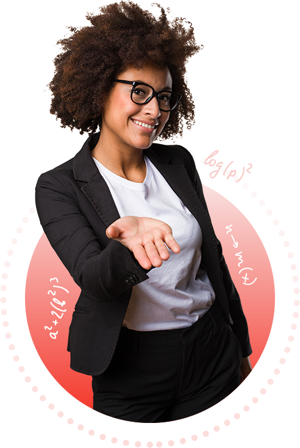

CCC || CCA || DCA || ADCA || C++ || JAVA || PYTHON || TALLY || WEB DESIGNING || NIELIT COURSES ||
NEILIT CCC Course is designed to input a basic level of IT Literacy.After completing the NIELIT CCC course,aspirants can use the computer for the basic purposes of preparing their personal/business letters, viewing information on the internet, receiving and sending emails,etc.
There is no minimum qualification to apply for or take the Course on Computer Concept examination.
NIELIT CCC course covers the basic concepts related to computer hardware and software ,presentations,spreadsheets,internet and email.

CCA, an acronym for Certificate in Computer Application,is a vocational certificate program that aims to upgrade an individual's computer skills,enhancing their employability
Candidates must have passed graduation or equivalent level(with Mathematics as a subject of study at 10+2 or graduation level) examination from a recognized university.He\she must have obtained atleast 50% (relaxable for reserved category candidates) of the marks at graduation or equivalent level.
Certificates in Computer Applications is a certificate course to study computer applications in depth.The course imparts theoretical,practical and technical knowledge to its learners about various computer levels that are used in day to day life.
DCA, an acronym for Diploma in Computer Application,is a vocational certificate program that aims to upgrade an individual's computer skills,enhancing their employability
Candidates must have passed graduation or equivalent level(with Mathematics as a subject of study at 10+2 or graduation level) examination from a recognized university.He\she must have obtained atleast 50% (relaxable for reserved category candidates) of the marks at graduation or equivalent level.
Diploma in Computer Applications is a certificate course to study computer applications in depth.The course imparts theoretical,practical and technical knowledge to its learners about various computer levels that are used in day to day life.

ADCA, an acronym for Advance Diploma in Computer Application,is a vocational certificate program that aims to upgrade an individual's computer skills,enhancing their employability
Candidates must have passed graduation or equivalent level(with Mathematics as a subject of study at 10+2 or graduation level) examination from a recognized university.He\she must have obtained atleast 50% (relaxable for reserved category candidates) of the marks at graduation or equivalent level.
Diploma in Computer Applications is a certificate course to study computer applications in depth.The course imparts theoretical,practical and technical knowledge to its learners about various computer levels that are used in day to day life.

What Does C plus Programming language Mean?C++(said C plus plus) is as object oriented computer language created by notable computer scientist Bjorne Stroustrup as part of the evolution of the C family of languages.
C is a structural or procedural programming language that was used for system application and low-level programming applications.Whereas C++ is an object-oriented programming language having some additional features like Encapsulation.Data Hiding, Data abstraction,Inheritance,Polymorphism,etc.
Object-oriented programming (OOP) is a computer programming model that organizes software designs around data, or objects,rather than functions and logic.An object can be defined as a data field that has unique attributes and behaviour.